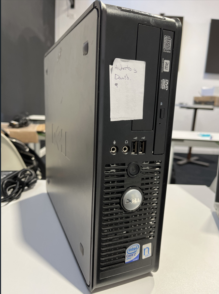
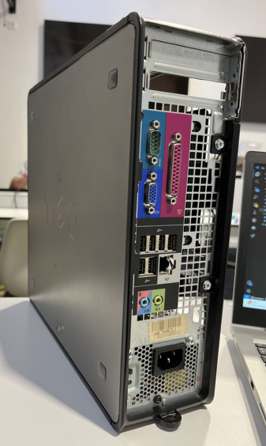
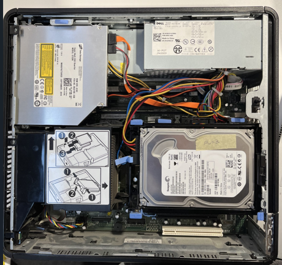
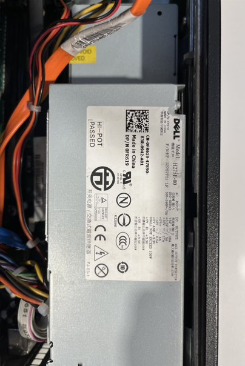

Per publicar a GitHub Pages: Settings → Pages → Branch `main` → `/docs`.
Només torre. Sense perifèrics ni informació de SO.
Torre Dell OptiPlex 755 en format petit, ideal per a tasques bàsiques com ofimàtica, navegació o ús educatiu. Es tracta d’un equip de segona mà, funcional i compacte, pensat per a espais reduïts. Destaquen la seva fiabilitat típica de gamma empresarial i les opcions d’expansió bàsiques per millorar-lo lleugerament (RAM, disc o una GPU de perfil baix). És una opció econòmica per a qui necessita un ordinador senzill i robust.
| Bloc | Dada |
|---|---|
| Caixa | Format petit (31,63 × 9,26 × 34 cm / 12.45" × 3.65" × 13.4"), 1 baía interna de 3.5", 1 baía externa de 3.5" (pla) y 1 baía externa de 5.25" (pla) |
| Placa base | Dell propietària (dissenyada per a aquest model, no hi ha més informació), Chipset Intel® Q35 Express, Socket LGA775, Factor de forma BTX, BIOS Dell propietària, Sense ranures M.2, SATA x4 (2 usades / 2 lliures) |
| CPU | Intel Core 2 Duo VPro 2 a 4 nuclis / 2 a 4 fils, Freqüència base 2.33–3.0 GHz, TDP 65–95 W |
| RAM | Fins a 8 GB DDR2, 2 ranures i 512mb Instalats |
| Emmagatzematge | 1 HDD SATA 3.5" de 250gb |
| Gràfics | Integrada Intel® GMA 3100 |
| Alimentació (PSU) | Dell propietària (275 W) · Sense certificació 80+ indicada · Connectors limitats al format BTX |
| Refrigeració | Cooler CPU d’estructura BTX amb conducte d’aire posterior · 1 ventilador principal (92 mm aprox.) |
| Connectivitat | USB 2.0 × 8 (2 frontals, 6 posteriors), Àudio entrada/sortida, Ethernet Gigabit, Sense Wi-Fi ni Bluetooth integrats |
| Expansió | 1 ranura PCIe x16 perfil baix i 1 ranura PCI perfil baix |



